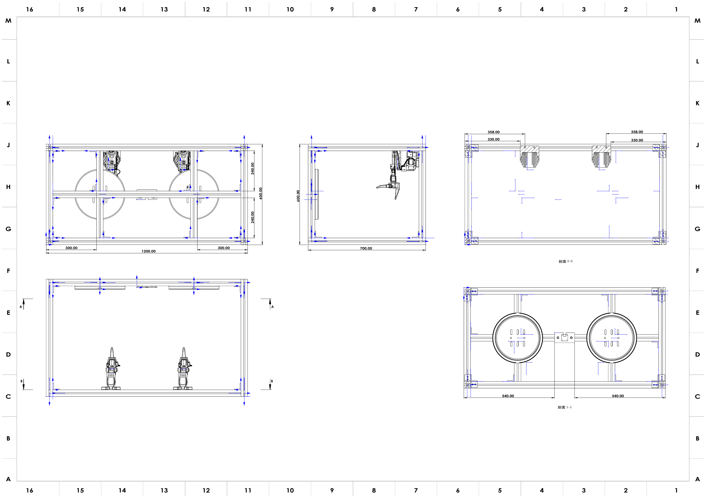

Hardware Assembly 硬件装配
Build the structural frame, then set up the workspace, four arms and three cameras. Verify the actual device mapping after assembly, then align the camera views with the saved installation references. 先完成结构框架搭建，再布置工作区、四条机械臂与三台相机。装配后确认实际设备映射，再将相机画面与已有安装参考对齐。
See BREE Assets for the rig and hardware references. Use System Calibration to check H poses and camera overlays after assembly. 机架与硬件参考见 BREE 资源。装配完成后，通过系统标定检查 H 位与相机叠加。
1 · Frame construction1 · 框架搭建
Build the 4040 aluminum frame first, then fit the panels, arm mounts, cameras and lighting. The assembled frame is 1200 mm wide × 600 mm deep × 700 mm high. Dimensions in the drawing and the material table below are in millimeters.先搭建 4040 铝型材框架，再安装面板、机械臂底座、相机与照明。框架外形为宽 1200 × 深 600 × 高 700 mm。下方工程图与物料表中的尺寸单位均为毫米。

Open full-size drawing ↗查看原尺寸图 ↗ · Download dimensioned drawing (PDF) ↓下载尺寸工程图（PDF）↓
Frame bill of materials框架物料清单
Material categories follow the homepage BOM. Profile lengths, connector counts and panel sizes below follow the current frame assembly model. Purchase links are listed as TBD.材料类别与首页 BOM一致；下表型材长度、角码数量与面板尺寸按当前框架装配模型列出。购买链接统一标为 TBD。
| Component材料 / 部件 | Specification规格 | Qty数量 | Use用途 | Purchase link购买链接 |
|---|---|---|---|---|
| 4040 aluminum profile4040 铝型材 | 40 × 40 × 1120 mm | 5 | Long beams and central crossbeam长边横梁及中部横梁 | TBD |
| 4040 aluminum profile4040 铝型材 | 40 × 40 × 700 mm | 4 | Vertical posts四角立柱 | TBD |
| 4040 aluminum profile4040 铝型材 | 40 × 40 × 520 mm | 4 | Short beams of the two side frames两侧框架的短边横梁 | TBD |
| 4040 aluminum profile4040 铝型材 | 40 × 40 × 240 mm | 4 | Internal mounting supports内部安装支撑 | TBD |
| Corner brackets角码 | 4040 | 42 | Join and reinforce the frame连接并加固框架 | TBD |
| Work / cover panels工作台板 / 顶板 | 1200 × 600 × 5 mm | 2 | Frame work and cover surfaces框架工作面与覆盖面 | TBD |
| Side panels侧板 | 700 × 597.5 × 5 mm | 2 | Side enclosures两侧封板 | TBD |
| Rear panel背板 | 1200 × 700 × 5 mm | 1 | Rear enclosure后侧封板 | TBD |
| Screws, nuts and fasteners螺钉、螺母与紧固件 | Compatible with the profile slots, brackets and panels与型材槽、角码及面板安装位置匹配 | 1 set1 套 | Secure brackets, panels and mounts固定角码、面板与安装件 | TBD |
| Lighting system照明系统 | LED strips, power supply and controllerLED 灯带、电源与控制器 | 1 set1 套 | Provide consistent workspace illumination提供稳定一致的工作区照明 | TBD |
| Printed mounting parts安装用打印件 | Arm pedestals, camera mounts and lamp brackets机械臂底座、相机支架与灯架 | 1 set1 套 | Mount hardware; see the fixture and mounting list安装硬件，模型见标定夹具与安装部件清单 | TBD |
The profile cut list contains 17 pieces with a total finished length of 11.44 m; allow for cutting loss when ordering stock. Printed mount models are listed in Calibration fixtures and mounting hardware.型材下料共 17 根，成品净长合计 11.44 m，采购原料时另计切割损耗。安装打印件模型见标定夹具与安装部件。
Build sequence搭建顺序
- Check the cut lengths and prepare the brackets, matching screws and slot nuts. Insert nuts needed inside closed frame sections before closing the joints.核对型材下料长度，准备角码、配套螺钉与槽内螺母。封闭连接前，先装入后续安装所需的槽内螺母。
- Build two side frames. Each uses two 700 mm posts and two 520 mm short beams. Keep the corners square and leave the bolts loose enough for alignment.先组装两个侧框，每个侧框使用 2 根 700 mm 立柱和 2 根 520 mm 短横梁。校正直角，先预紧连接螺栓。
- Connect the side frames using four 1120 mm long beams. Check the 1200 × 600 × 700 mm outside dimensions and compare the diagonals before tightening the outer frame.用 4 根 1120 mm 长横梁连接两个侧框。核对 1200 × 600 × 700 mm 外形尺寸并比较对角线，再拧紧外框。
- Install the remaining 1120 mm beam and four 240 mm supports at the locations in the drawing. Follow the drawing’s mounting dimensions when positioning arm bases and upper supports.按工程图位置安装剩余 1 根 1120 mm 横梁和 4 根 240 mm 支撑。机械臂底座与上部支撑的定位按图中安装尺寸执行。
- Fit the work / cover panels, side panels and rear panel. Secure the mounting parts and lighting, then route cables along the frame so they clear the shared workspace.安装工作台板 / 顶板、侧板与背板，再固定安装件和照明。沿框架整理线缆，留出共享工作区。
- Check that the frame stands level, the connectors are tight and the mounts do not shift. Continue with workspace layout, device assignment and camera alignment below.检查框架放置平稳、连接件紧固、安装件无松动，再继续下方工作区布局、设备分配与相机对齐流程。
2 · Workspace layout2 · 工作区布局
- A fixed tabletop with a plain, consistent background; do not change lighting between sessions. 使用固定桌面与纯色一致的背景；会话之间不要改变光照。
- The two follower arms are clamped to the table edge, facing each other across the shared workspace. 两条从臂固定夹在桌沿，隔着共享工作区相对而立。
- The two leader arms stand beside the operator for two-handed teleoperation. 两条主臂放在操作者旁边，便于双手遥操作。
3 · Arm placement & USB port assignment3 · 机械臂摆放与 USB 端口分配
The operating guide uses the following example mapping. Verify it with lerobot-find-port after every reconnect; connection order alone does not guarantee device numbers. 操作指南采用以下示例映射。每次重连后通过 lerobot-find-port 核对，插入顺序并不保证设备编号固定。
| Arm机械臂 | Type类型 | Port端口 | Calibration ID标定 ID |
|---|---|---|---|
| Left follower左从臂 | follower | /dev/ttyACM0 | follower_arm_left |
| Right follower右从臂 | follower | /dev/ttyACM1 | follower_arm_right |
| Left leader左主臂 | leader | /dev/ttyACM2 | leader_arm_left |
| Right leader右主臂 | leader | /dev/ttyACM3 | leader_arm_right |
4 · Camera rig4 · 相机机架
The operating guide uses the following example camera indices; confirm each live view before running commands: 操作指南中的相机编号示例如下；运行命令前按实时画面确认：
| Camera相机 | Device设备 | Mount安装位置 |
|---|---|---|
| Global (overhead)全局（俯视） | /dev/video0 | Fixed overhead mount over the workspace工作区上方固定俯视支架 |
| Left wrist左腕 | /dev/video2 | Left follower gripper左从臂夹爪 |
| Right wrist右腕 | /dev/video4 | Right follower gripper右从臂夹爪 |
All cameras run 640×480 @ 30 fps, MJPG. After mounting, their exact pose is locked in during System Calibration — mount them roughly now, align them precisely later. 所有相机以 640×480 @ 30 fps、MJPG 运行。安装后，相机的精确位姿会在系统标定阶段锁定——现在先大致安装，之后再精确对齐。
5 · Preserve the installation reference5 · 保留安装参考
The camera workflow compares live views with saved reference images. Keep camera mounts, lighting and arm poses stable.相机流程将实时画面与已保存参考图对比。保持相机支架、光照与机械臂姿态稳定。
Before the next step, ensure that:进入下一步之前，请确认：
- Frame dimensions match the drawing; brackets, panels and mounts are secure.框架尺寸与图纸一致，角码、面板和安装件已固定。
- All four arms power up and appear on ACM0–ACM3 in the assigned order.四条臂都能上电，并按分配顺序出现在 ACM0–ACM3。
- All three cameras produce a live image at the expected indices (0 / 2 / 4).三台相机在预期编号（0 / 2 / 4）上都能出图。
- Lighting and background are fixed — they must not change between sessions.光照与背景已固定——会话之间不得改变。